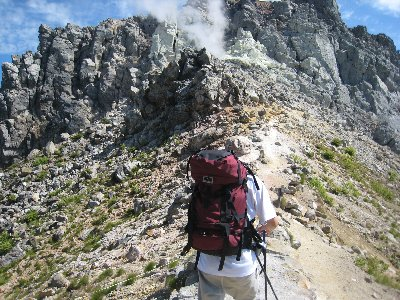
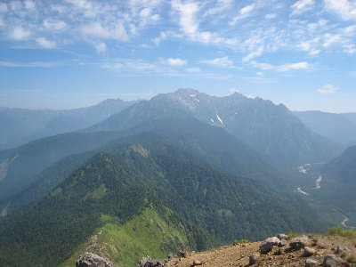
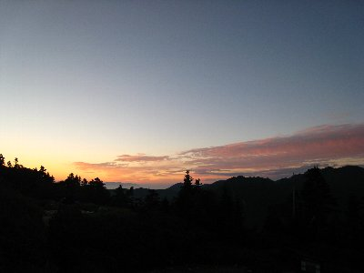
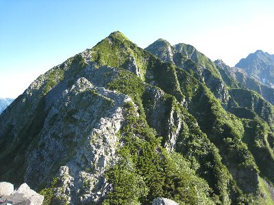
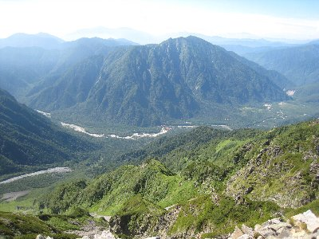
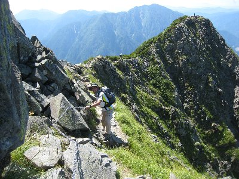

焼岳・西穂高岳（北アルプス）登山 | 2008年8月 |
|---|---|
| 毎年恒例になっている「夏にアルプスに行こう」企画3年目。今回は初の北アルプスへとチャレンジです。。 変わらずの3人パーティーで、焼岳・西穂高岳の一泊二日を計画し、木曜夜立ちの金曜早朝登り、日曜休養計画でやって参りました。 焼岳って上高地から仰ぎ見る事はあっても、登ろうと思わなかった山なんですよね。岩ばかりの禿げた山で、今でも噴煙を上げている火山、というイメージが有りましたから。 安房峠にある駐車場（中の湯温泉近辺）から、朝6時半スタート。ホントは6時スタートのつもりが遅れてしまった。 地図を見てわかっていた事だが、歩き出してすぐに急勾配が待ち受けていた。周りは木々で覆われているため、まだ朝も早いと言うのに蒸し暑い。むっとする暑さの中を黙々と進んで、焼岳が見えたときは嬉しかった。 焼岳は上高地で見るよりも緑に覆われた、綺麗な山に見えました。なるほど、頂上付近では確かに噴煙が上がっています。途中から森林限界なのか木々がなくなり、岩と高山植物らしい草だけになり、ますますアルプスチックになっていきます。 | |
 1時間半歩いてやっと焼岳見えた |  焼岳への道もなかなかいいな〜 |
| 出発から3時間ほどで、噴煙を上げているお鉢に到着。なんと、焼岳のお鉢には池がありました！結構綺麗な池ですが、「有毒ガスが溜まっているかも知れないので入るな」と看板とロープで入れません。 そのまま焼岳（2444m百名山）の北峰に登りました。すごい。360度の視界が素晴らしく美しい！ 東は上高地、南は乗鞍、西は焼岳の南峰、北はこれから向かう穂高連峰。天気も良くて、ホント最高です♪ ただ、これから向かう小屋が遥か彼方に見えて・・・・ ひとしきり記念写真を撮ったら、遅れを取り戻すべく出発！ | |
|  焼岳の噴煙 |  焼岳から見える穂高方面（遠くに今日の宿が・・・） |
| しかーし、ここから小屋までが困難極まりない道だった。あまり人が通らないのか、道幅は狭く、岩や木々を縫って行くかの様な道。片側は一見草で覆われてわからないが、地面はなく崖っぽい。ルート全体で木々が覆いかぶさっており、かつ無風。この蒸し暑さと展望の悪さ、時間も掛かるし正直楽しくない道だった。すれ違った人も二桁いないし。4時間近く歩いたのに。 いい加減、気力と体力の限界を感じ始めた頃、西穂山荘に到着。もう〜足裏がかたくなってるよ〜 早速宿泊の手続きを。「本日は布団一組に1.5人」・・・や〜、金曜（平日）なのに〜、しかもオリンピック開会日なのに〜 そんなに人が居るの〜(ToT)/ 仕方ないけど荷物を置いて、ビールを買い、テラスにて本日の成果を祝いつつ乾杯！ か〜、うまい！ ホント、この一杯がうまい！ 夕食まで飲みながら（てか飲み過ぎ）、標高約2400m位からの景色を楽しみました。 飲みすぎたせいか、夕食後軽く昼寝。起きたら20時だった。部屋は既に暗く、皆さん睡眠モード。しかし、1.5人は暑い。・・・あれ、よく見ると、布団は8つあって、人は8人みたい。僕らのところだけ、1.5人だけど、他は悠々寝てるじゃん！ 布団一個余ってるし！ もしかして、まだ誰か来るかもしれないと、しばらく待ってみるが、面倒くさくなって空いてる（と思われる）布団にゴロリ。やー、快適。暑いのは変わらないけど。 窓の外で遠く雷光が輝く。明日の天気大丈夫かな？ | |
|  山荘からの朝焼け |  西穂独標への道（上から撮影） |
| 翌朝というか、早朝3時。早い人は起きだし準備を始める。4時まで寝てたが我慢できず外に出ると、東の空は明るくなってきていた。4時半に「未だ眠い」とのたまう後輩を起こし（この時点で部屋には僕らだけ）、外のテラスで朝食。今回、朝食だけは持ってきたんだよね。私はパンとスープ、コーヒー。バーナーも持ってきたからお湯は沸かせます。 さて、6時10分、今日は西穂高岳に行って帰ってくるピストン。荷物は小屋において、最小限の荷物だけもって挑みます。まだ朝方だから風が涼しい〜〜 天気も快晴、景色は既にアルプスチック、いやがうえにも気分は高まり、荷物も軽いし、テクテクと進みます。 時々振り返ると、昨日登った焼岳が遠くに見えます。やー、あんな所から歩いて来たんだな〜 西穂高への通過点、西穂独標。岩をよじ登る格好で山頂（？）へ。うわ〜さらに景色良いし！ ふと、西穂高へ目をやると・・・見えちゃった・・・これから通るであろう道・・・え、道か？ 険しくないか？ やま・・尖がってるよ！ しかも、ここから（西穂独標）降りる道が見えねーー、崖だろこれは！ ここで一人がリタイヤ。先に山荘に戻ってるって。まあ、しょうがないよね、俺も怖いもん。しかし、中高年のおじ様おば様がヒョイヒョイ行くんだから、負けていられねー 実際、独標で引き返す人は多く、先に進もうと思う人は少ない。 | |
|  独標から西穂を見る。これ・・・道ですか？ |  西穂高から歩いてきた道（？）を振り返る |
| 覚悟を決めて崖のような道を、後ろ向きでよじ降り、道を踏み外したら人生終了のやせ尾根を歩き、岩をつかみ、ひときわ鋭いピラミッドピークへ。記念写真もそこそこにすぐ出発。 歩いているときは写真を撮る余裕がなく、行きの写真は少ない。 山荘を出発して3時間。ついに、ついに西穂高岳（2909m)制覇！ 狭い岩だらけの山頂ですが、本当に景色が最高です。（今回、最高の景色何回目？ いや、ここはマジに良いよ） 南は遠くに焼岳、そして険しい独標・ピラミッドピーク、東は梓川を携えた上高地を見下ろし、西は雄大な山脈がそびえる笠ヶ岳、北はこれからエキスパートコースになる間ノ岳、道無いし・・・崖に人がへばりついているのが見えるけど・・・ 天気も良くて空が青く、尖がったところに立っているためか、とんでもない高所に居るみたい気分になります。実際、高所か・・・ 十分撮影と休息をとって、名残惜しくも下山開始。 | |
|  西穂高から上高地を |  これから先はエキスパートコースの奥穂高岳方面 |
| 帰りは余裕が出てきたのか、道もそこまで恐ろしくなくなり（でも、へっぴり腰）写真を撮る余裕も生まれます。11時半には山荘に戻り、さて昼でも食べるかと思っていたら、西穂高の方から黒い雲がモクモクと、そして、ドガシャーンと近くに雷が落ちた。雨はまだだけど、こりゃ早めに下山だな、とレストハウスで昼食。因みに私は西穂ラーメン。・・・これは袋ラーメンみたいなチヂレ麺、まあ、それなりに美味しいから良いか。 さあ、下ろうと準備をしてたら雨。土砂降りではないけど、仕方なくレインコートを着る。降り始めて1時間もしたら雨はやんでしまい、ぬかるんだ地面と雨にぬれた草木が行き手を阻みます。 長い下りを降りて上高地に着いたときには晴天。足はパンパンで手も泥だらけ、梓川で顔を洗い、タクシーを拾って駐車場へ。 | |
|  帰りは余裕が出て写真撮り |  西穂独標はまるで崖のよう |
| いや〜今回は歩いたな〜 疲れたけど素晴らしい景色で心癒せました。 | |
| 写真＆コメント ｂｙ べっしー | |